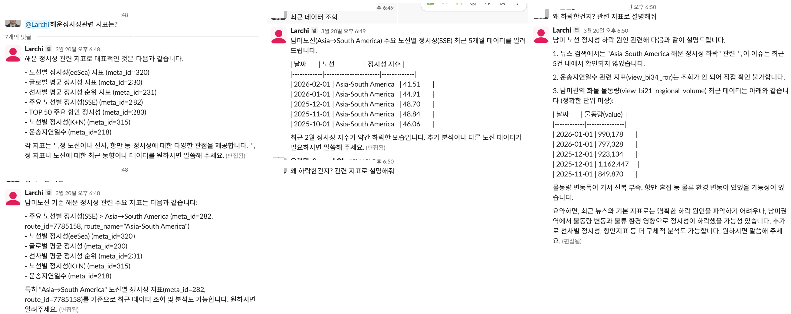
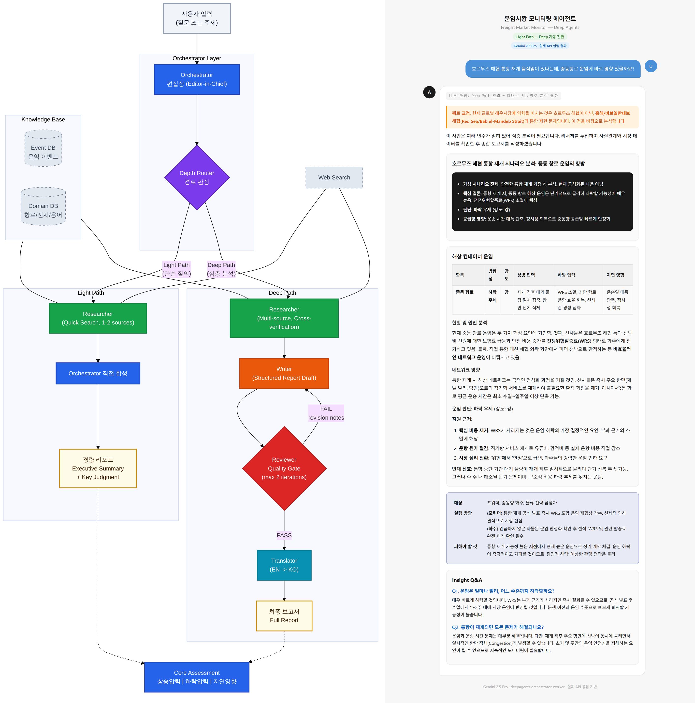
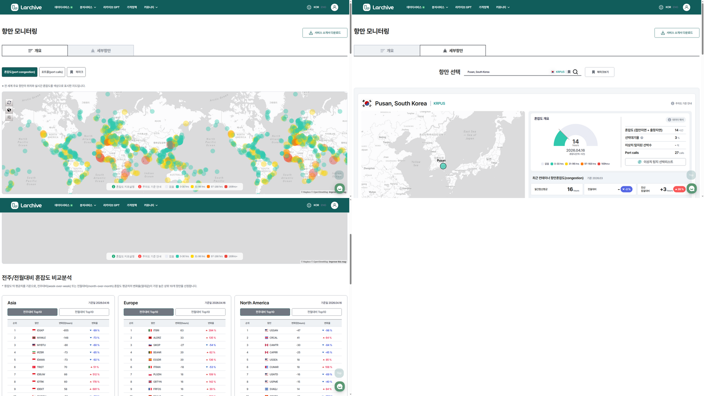
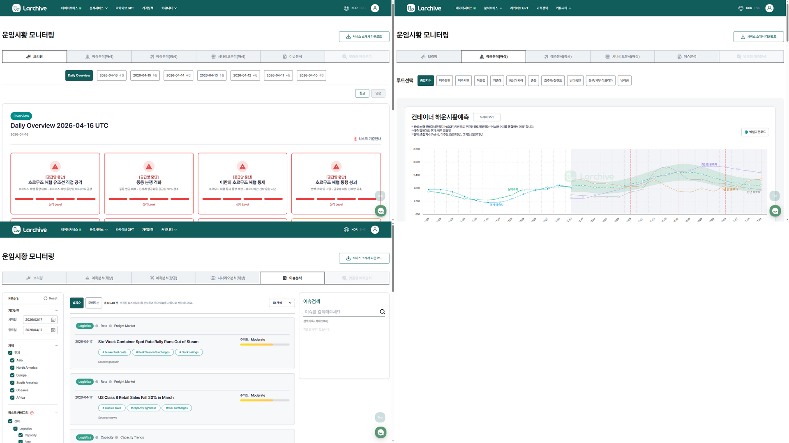
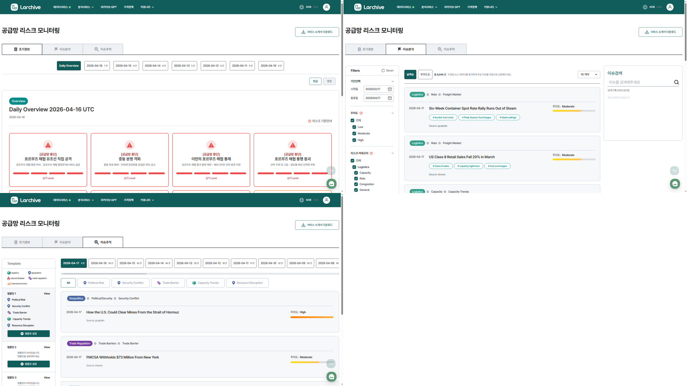

문제 병원 판독소견서(영상의학과 리포트 등)는 비정형 텍스트라 검색·분류·통계가 불가능하다.
해결 의료 도메인 특화 텍스트 전처리 파이프라인을 구축하여, 비정형 판독소견서를 구조화된 데이터로 변환. 약어·혼용 표기 등 의료 텍스트 특유의 노이즈 처리.
KISTI 연구자료 검색 챗봇 — 한국과학기술정보연구원(KISTI) 대전 센터에 대화형 연구자료 검색 챗봇 API 납품. 챗봇 내부 가비지 필터링을 LM/AI로 개발.
문제 데이터베이스에 정보가 있어도 비개발자는 직접 조회할 수 없다. 매번 개발자에게 요청해야 하는 병목.
해결 자연어로 물어보면 데이터를 찾아서 답해주는 사내 AI 에이전트. 웹 대시보드 + Slack 채널 통합 운영. 격리된 Docker 샌드박스 내 코드 실행.
결과 비개발자가 직접 데이터 질의 가능.

문제 운임 시황·관세·공급망 뉴스를 종합한 정기 리포트를 분석가가 매번 수작업으로 작성.
해결 데이터 수집 → 정제 → 분석 → 리포트 발행까지 전 과정을 LLM 에이전트가 자동화. Orchestrator가 질문 난이도를 판별하여 Light/Deep Path로 분기.
결과 리포트 작성 완전 자동화, Slack 정기 배포.

문제 해운사·화주는 전 세계 항만의 혼잡·지연 상황을 파악하기 위해 수작업으로 여러 소스를 확인해야 했다. 항만이 수백 개인 상황에서 수동 모니터링은 불가능.
해결 700개 항만 혼잡도를 자동 수집하고, 70,000척 선박을 실시간 추적하는 모니터링 대시보드 구축. 13개 주요 초크포인트 30분 주기 수집, 이상 탐지 자동 알림.
결과 삼성전자 DA, 현대글로비스 캐나다 등 기업 고객에 항만 지연 예측 모델 납품.

문제 해운 운임 예측은 뉴스·지표·시장 상황을 종합해야 하는데, 분석가가 수작업으로 읽고 판단하는 데 평균 300시간 이상 소요.
해결 ML 모델로 뉴스·시황을 자동 분류하고, LLM 에이전트가 브리핑·예측·시나리오 분석·리포트까지 자동 생성. 매일 2,000건 글로벌 공급망 이슈 자동 수집·분석.
결과 의사결정 소요시간 300시간 → 30분 이내. 주요 운임 지수 95% 신뢰구간 월간 예측. 성균관대 협력 텍스트 정보 결합 예측모델 논문 주저자.

문제 전쟁·파업·자연재해 등 공급망 리스크는 터진 뒤에야 파악된다. 사전 감지가 안 되면 대응이 늦고, 재정적 손실로 이어진다.
해결 900개 이상 소스에서 뉴스 자동 수집, NER로 리스크 행위자 추출, Neo4j 그래프 분석으로 심각도 스코어링하는 조기 경보 시스템 구축.
결과 TIPS 정부 연구과제 선정. 국내 특허 3건.

데이터 도메인에서 기획부터 제품 개발까지 1인 풀사이클로 진행 — 자동 리포트 시스템 · 메신저봇 플랫폼은 기획 · 설계 · 개발 · 배포 · 운영까지 단독 수행.
| 연구·과제 기획 | 정부 R&D 연구과제 책임 (TIPS 선정), 산학협력 연구 설계 (KAIST DSAIL · 신세계아이앤씨 · 성균관대), 논문 공저 (SHAP 모델 해석성) |
|---|---|
| AI·데이터 분석 | LLM 파이프라인 (자동 리포트 시스템), NER · 이슈 분류 · 감성 분석 (공급망 리스크 모니터링), 시계열 예측 (해운 운임 7개 지수, 항만 지연), 통계+ML 하이브리드 + SHAP 해석성, 비정형 텍스트 정제 (의료 판독소견서 · 뉴스), 그래프 관계 분석 (Neo4j) |
| 시스템 구축·전달 | API 설계 · 납품 (KISTI 챗봇), 클라우드 24/7 운영 (Oracle Cloud · NCP), 데이터 수집 → LLM 리포트 → 배포 자동화, 지도 · 대시보드 시각화 (Mapbox) |